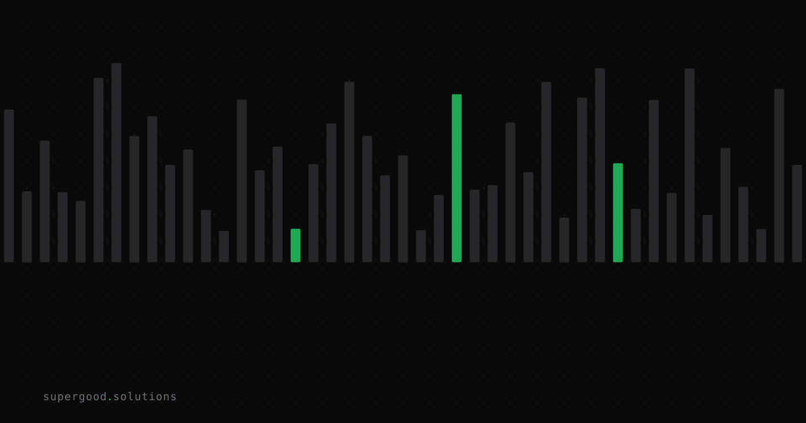

Observability Isn't Evaluation (And the Difference Is Killing Your AI Rollout)
TL;DR: 89% of enterprise AI teams can watch their models run. Only 37% can tell you if the outputs are right. That gap — between observability and evaluation — is the most expensive mistake in production AI today.
Key Insight
Your logging dashboard is lying to you by omission.
Observability tools — LangSmith, Langfuse, Arize Phoenix — are genuinely useful. They give you traces: inputs, outputs, latency, token counts, call chains. They tell you that your AI ran. What they don't tell you is whether it was correct.
This is a category error most teams don't realize they're making. They deploy, they instrument, they watch the green dashboards — and they assume that means the system is working. It isn't. Not necessarily.
LLM outputs degrade silently. A hallucinated answer doesn't throw a 500. A response that's factually wrong but phrased confidently doesn't spike your error rate. Your on-call engineer won't get paged. You'll find out the way you find out everything in enterprise AI: a customer complaint six weeks later.
Why Teams Miss This
The mental model teams bring to AI deployment is borrowed from traditional software: if it's not throwing errors, it's working. That model breaks for LLMs.
Traditional software is deterministic. If the function returns the wrong value, you reproduce it and fix it. LLMs are probabilistic — same input, different output, and "wrong" is often a matter of degree rather than binary failure. You need a grader, not just a logger.
The other trap is benchmark scores. Teams evaluate a model against published benchmarks — MMLU, HumanEval, whatever's in vogue — and ship it. But benchmarks measure the model in isolation. Your production system isn't isolated: it has a retrieval layer, a prompt template, a context window, post-processing, and guardrails. Every one of those adds quality variation that benchmarks can't capture. The model that scored 78% on MMLU might be hitting 40% on your actual task. You won't know because you haven't looked.
Per analysis from NextWaves Insight, 23% of teams with confirmed production deployments don't evaluate their agents at all. The same analysis found only 52% run any offline evaluations before shipping, and a mere 37% run online evals against live production traffic.
How to Actually Do It
Build three layers of evaluation in order of effort:
1. Offline evals — do this before any code ships
Run a fixed test set through your system and score outputs. The score doesn't need to be perfect — it needs to be consistent. You're building a regression harness, not a research benchmark. Fifty representative test cases is enough to start.
# LLM-as-judge eval pattern
def eval_response(question, reference_answer, model_answer, judge_model):
prompt = f"""
Score this answer 1-5 for faithfulness to the reference.
Question: {question}
Reference: {reference_answer}
Answer: {model_answer}
Return JSON: {{"score": int, "reason": str}}
"""
return judge_model.complete(prompt)Tools like Braintrust or LangSmith wrap this pattern with a UI. The specific tool matters less than having one before you deploy.
2. Online evals — where the real signal lives
Sample 5-10% of live traffic and run it through an async evaluator. Flag outputs below a threshold for human review. This catches the drift your test set never anticipated — the weird edge cases your users actually type.
Only 37% of teams do this step. It's the highest-signal quality signal available, and the most skipped.
3. Human review loops — to keep your automated judge honest
Automated LLM-as-judge evals are fast and scalable but drift over time. A small weekly cadence of human review — even 20 samples — recalibrates the judge. If your automated grader is wrong about what "good" looks like, your entire quality signal is corrupted upstream.
What We've Learned
Teams that successfully cross from pilot to production share one habit: they build eval infrastructure before they build features. Not after. Not "we'll add it later." Before.
The practical starting point: pick your three most important output properties for your use case (factual accuracy, scope adherence, tone — whatever the failure mode actually is), write 50 test cases, pick a judge model, and run the harness before your first deploy. You catch the embarrassing failures in the test set instead of in front of a customer.
Eval infrastructure isn't what gets demoed at AI summits. Test sets and human review queues don't make for a good conference slide. But they are what separates the 15% of enterprise AI pilots that reach production from the 67% that die in pilot purgatory, quietly reclassified as "ongoing evaluation" until the budget runs out.
The boring stuff is the job.
Sources
- AI Evaluation in Production: The Gap Most Enterprise Teams Ignore — NextWaves Insight
- Why 67% of Enterprise AI Agent Pilots Never Reach Production: The 2026 Scaling Crisis — Agent Market Cap